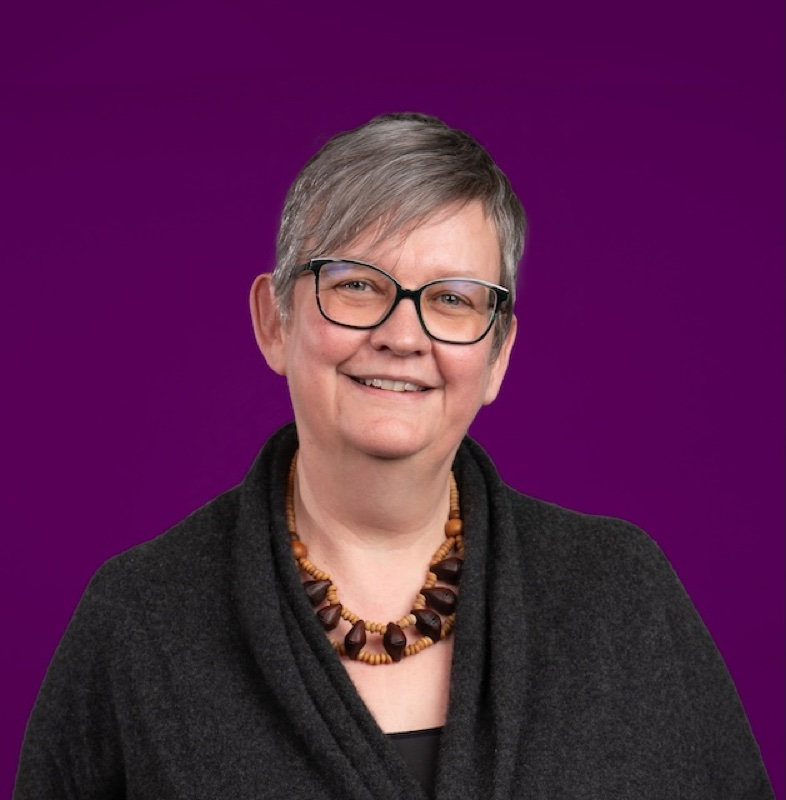

Roslyn Bill
Aston University, UKMapping the brain's plumbing system to halt swelling and slow neurodegeneration. FLOWCODE will create dynamic maps of CNS fluid flow pathways, identify the protein valves that control them, and develop medicines targeting the root causes of brain swelling and cognitive decline — including a repurposing clinical trial.
Roslyn Bill is Aston University's 50th Anniversary Professor of Biotechnology. She obtained her degrees in Chemistry from Oxford University and is an international authority on aquaporin (AQP) water channels. Her team discovered how water enters the brain after injury through AQP4 and identified a licensed medicine that can prevent it. She was awarded an ERC Advanced Grant in 2023 and is a founding member of the AQP sub-committee of IUPHAR/Guide to Pharmacology.